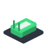
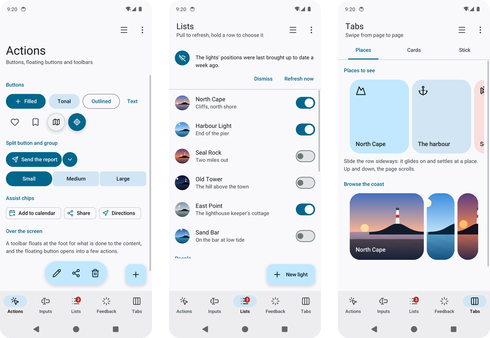

go-ui-android makes Android apps in Go that look and feel like Android’s own: Material Design pieces (bars, lists, buttons, dialogs) and a tool that turns the program into an app you install on a phone. No Java, no Android Studio.

You write the app once in Go with go-ui; the material pieces give it Android’s looks (the wallpaper’s colours, the back gesture, the on-screen keyboard), and go-ui-apk packs it into an .apk. The same program also opens on a computer, to try it as you go.
Pick the line that sounds like you.
| If you… | Read | Time |
|---|---|---|
| just want to see every piece | Try it without writing code | 2 min |
| are new and want the first lines | Getting started | 10 min |
| want to learn step by step, up to a phone | 🏴☠️ The quest: a lighthouse app, in 5 levels | 90 min |
| want to know about colours, gestures, screen readers or packaging | The guides | — |
| want to use one piece (a top bar, a dialog, a carousel) | Components: each one with real examples | — |
| are looking up a function | The reference | — |
With Go installed and the projects copied (see Getting started), the gallery shows every piece in a phone-sized window:
go run ./cmd/gallery
The menu on the left (or the files in docs/) follows this order.
Start
Learn
Guides
Use
Reference
| Word | What it means |
|---|---|
| Go | A programming language. To try these projects you install it once, from go.dev, and type go run … in a terminal. |
| Terminal | The window where you type commands: Terminal on macOS and Linux, PowerShell on Windows. |
| Repository | A project’s folder of files, kept on GitHub. git clone <address> copies it to your computer. |
.apk file |
An Android app in one file, ready to install on a phone. |
| Immediate mode | A way of making interfaces: every moment the program describes the whole screen again from its data, so the screen can never show something out of date. |
| Quest | The tutorial of these docs: short levels, each ending with something that works and an achievement. |
go-ui-android is one of a family of small projects that work together:
| Project | What it does |
|---|---|
| go-renderer | draws 3D scenes and flat interfaces |
| go-ui | buttons, panels and whole applications |
| go-ui-android (this one) | Android apps that look like Android’s own |
| go-sound | sound and music |
| go-scene-builder | 3D scenes from a flat map |
| go-simulator | simulations that change a scene |
| go-simulator-terrain | ground shaped by rivers |
| go-simulator-climate | weather and biomes |
| go-simulator-flora | forests that grow |
| go-simulator-urban | towns that grow |
| go-simulator-motion | a scene that moves |
| go-3ds | Go on the Nintendo 3DS |
⚠️ All of them are educational experiments, written with an AI assistant and pending review by their author: good for learning and playing, not for production.